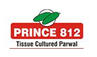

General Information

Pointed gourd (Trichosanthes sp.) is a tropical vegetable crop with origin in the Indian subcontinent. It is known by the name of parwal, palwal, parmal or pattol in different parts of India and is one of the important vegetable crop in India.
